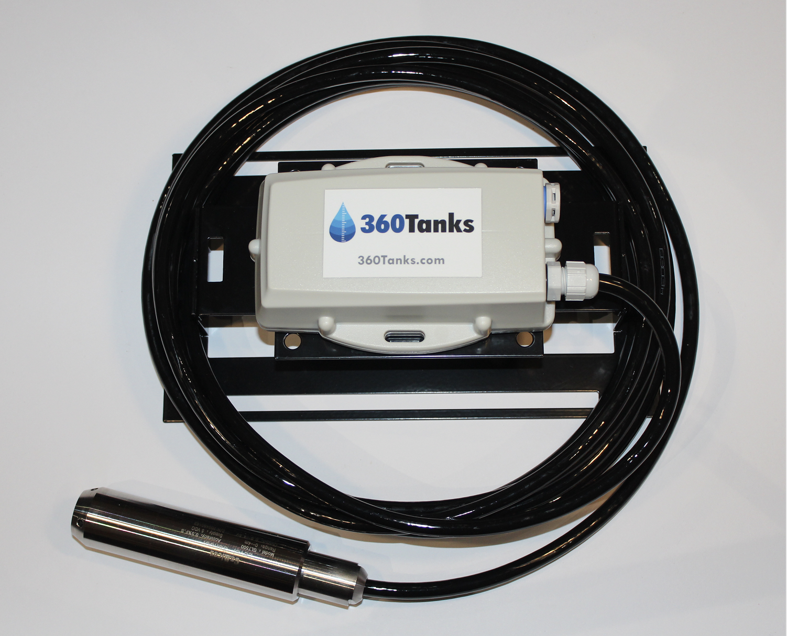
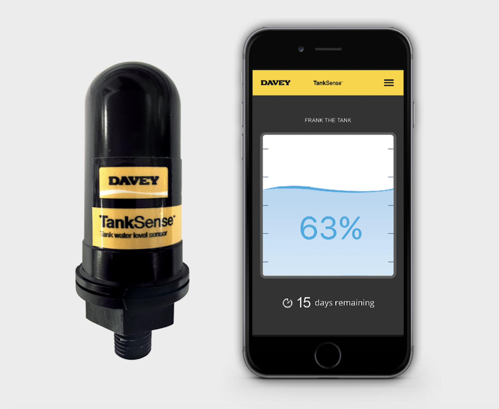

Overview
Topic
Motivation
Our aim for this project is multi-faceted as we try to create a product that enables easier water storage monitoring for both the agricultural industry as well as the ability to market as something beneficial for humanitarian aid. Growing up in Australia we know first hand the harsh conditions that we can face in any season and the struggles that families involved in agriculture can face. Our motivation stems from this and the fact we realise that this project could be used to greatly help improve the quality of life for people living in third world countries, something which our group has decided is extremely important and relevant. We believe this project is important as it fills a gap in the market and provides a solution to a problem people may not be aware of. It also remains interesting as it includes so many different types of IT, business and engineering knowledge to get it up and running. Although not specifically a project specified for IT it does still involve current IT trends such as cloud services and software development, both of which are extremely prevalent in the modern IT world. Furthermore, it adds to the ever growing industry of IoT (Internet of Things) as we begin to digitise and automate as many processes as we can to promote ease of access to everyone. By implementing this appropriately we believe we have an opportunity to bridge a gap in the market and make an affordable and easy to use product for generations to come no matter the use of the product. Projects such as this one allow employers to see that we are interested in bettering the world of IT and we are committed to finding solutions for problems. It also shows great levels of courage and creativity as taking on any large scale project requires hard work, dedication and most importantly a great idea to back it up. Demonstrating these things shows a future employer that you have skills to offer and are willing to work hard to achieve goals whether it be for yourself or for a common goal.
Landscape
In the current market there are multiple different products which offer similar operation and services. A lot of companies have designed items that work on submergible products that are mounted to the bottom of the tank. This is something we proposed in our original idea but we also offered a point of differentiation in that we had also thought about implementing a system that relied on a float valve rather than a submersible pressure gauge. A few competitors are listed with images of their products included:
Davey Pumps

360 Tanks

We believe that the ease of installment of a float valve means tha pre-existing tanks can have the monitor installed. The pressure gauge options require an empty tank and may in fact need thousands of litres of water drained to install. Furthermore, by creating something simple we can market this to not only agriculture but humanitarian aid. The cheaper, easier to use solution can help identify tank storage levels in much poorer countries. This is our major point of differentiation and something we would work on to sell our product.
Aims
The overall aim for the project is to create a piece of hardware which will ultimately be implemented into a variety of water storage devices. This tool would assess the levels of water in any storage unit through a connection between the piece of hardware and a software application. The primary two components of the project break down to the construction of the hardware and the programming of the software component, these are the bare bones of it which are essential to getting the project running. Our goals can be broken down into the following:
Construct a reliable piece of hardware that is able to assess water levels in a variety of storage units of limited capacity. This is a core component of the project as there is no other realistic method of assessing water levels through purely a software basis. The hardware must be water-proof, able to sense water levels, consistently transmit water data back and forth between itself and the application. It must also be able to gauge the capacity of the storage unit it is situated within, within a reasonable limit. Measuring water levels can be accomplished through a variety of sensors and parameters which the user inputs prior to submerging the hardware into a water-filled container.
Program software that reliably retrieves data from the hardware that is receiving the data. This is also a core essential component of the project, as this would receive all the information necessary for water level assessment and display it visually for our user base. The application would show a variety of information about the quality and levels of water that the hardware is situated in. Ultimately, the hardware and software component would have the number 1 priority in the development process. The bare minimum would be to accomplish a minimalistic approach to measuring water levels without implementation of any advanced features.
In a case where it is a choice between developing the hardware or programming the software, the hardware would be a higher priority. The reasoning behind this is that visual feedback can be implemented into the hardware component with simple digits or letters rather than a complex application that displays a variety of information. The hardware could potentially be momentarily submerged into water momentarily and is removed, the hardware would subsequently provide some form of visual feedback about water levels & quality.
Scope and Limits
As for this assignment project idea, it was mainly focused on building this cheap product as an humanitarian aid for the people near the rural areas around the globe as an easier way of monitoring their water bodies, skipping the manual labour steps through using an app instead. People of rural areas were the prior focus; they are the aim and the motivation behind this project to get rid of the inconveniences as one of our team members grew up in the rural area. The main limitations we faced was the amount of time we had for this project being 16 weeks and during the early stages of the process we chose the hardware part of the device to use a float valve instead of a pressure gauge as this is more price-friendly to manufacturers and consumers(farmers, etc). For the software development, for the microcontroller we decided to use the Arduino model instead of raspberry pi as we did not have python experience in our team. Another limitation was with the network range between the RF transmitter and receiver has the limit range of 100m but it can be extended using repeaters by 75m as mentioned above in ‘Plans and Progress’. Instead of repeaters for the cons of line of sight problems through terrains, using satellite technology was suggested and was unfortunately rejected as it is more costly and complex to execute with. In addition, farmers of rural areas will not be able to afford the fees. In our plans on making a 3D model prototype of the product was shut down due to the COVID lockdown. The scope of this project, we planned to upgrade IPX7 standard to IPX8 in the prototype with more funds. With limited time frame and lack of experience in programming the software we cannot develop a demo application however we decided to use Appery.io to build the app for both mobile and desktop versions which does not require much programming knowledge.
Tools and Technologies
As this project compiles lots of different elements from IT, it requires multiple pieces of both hardware and software to get up and running. To begin a network would need to be set up to relay data between the storage unit and the user. This requires frequency management and perhaps the use of cloud servers to back up and store user data. Both desktop and IOS/android versions of an application would also need to be allocated so as we have working platforms for a broad range of users. There is an abundance of app builders on the market most of which require a monthly subscription to use their service. They do however create a bit of an easier environment to work from as some of the coding is done and drag and drop can be used. Something basic and not very expensive is Appery.io [1] which offers cloud-based web and phone applications with minimal programming knowledge required. This allows an online and easy to access version if we were to ever upgrade or need to work on the applications. The desktop version could also be done on Appery or could be done using a mixture of python, java and javascript. This would make the building a little more difficult but would provide ultimate flexibility in customisation and website speeds. We would also require some way to configure the microcontrollers themselves to have the relevant information on them to be able to run the specific code segments. This would most likely be Atmel studios as it is very powerful and requires no licence to use commercially. In terms of hardware we would require a cheap microcontroller to take an input from a physical device, this would most likely be an Arduino as it is a cheap alternative to other microcontrollers. Furthermore, an RF wireless transmission module would be paired with the microcontroller to transmit the signal long distances.
Testing
The testing of this project is the key factor that would determine its success. The project technology will be first tested mainly in water storage devices, by doing this we can get an accurate representation of the strengths and weaknesses of this new device. The second way the device will be tested is through other companies and getting their insight into its efficiency. For the first testing, it’s important that the concepts and theory behind the hardware device matches how it works in real life situations. The technology will be tested to see if it accurately assesses and presents the water levels compared to other similar devices, these devices alongside our own will be placed in different water levels. After the hardware components are tested, the Program software that retrieves the data will then be tested. The software should display and present the quality and levels of water that the hardware has picked up. If the first testing meets the satisfactory requirements we can then move on to the second phase of testing where it's getting real insight feedback from individual companies. The device will be given to them for them to use for about a month, this way we can get accurate data and feedback from them. It is important to test it out in companies so that they can always tell us the limitations of the device in ways we may not see it. The way we will find our users is through advertisement, the ad will be offering to pay companies to get feedback and try our device alongside their other devices and ways they think it differs from other devices. Moreover, the number of companies estimated to be tested is anywhere between 5-10 since we don't want to spend too much money on a great number of companies. In summary, we will know the device is a success after many fields of testing through our own testing and other companies' feedback.
Risks
As the project requires a lot of data transmission to be done remotely it leaves an inherent risk of network failure. All data from the user is to be transferred over networks from the remote device to their phone/desktop and needs to be able to be accessed at an instant's notice. If in this example the network was to fail in a way that servers were down, or communication became corrupted the service would become unusable and most certainly not be available to paying customers who need the service. This is extremely relevant in our case as we aim to market the device to other third world countries overseas. If a device were to malfunction overseas it would make the process to fix it more difficult. If remote access were not available technicians would need to be allocated to work on the problem and in a very timely manner as this water storage management deals with the livelihoods of people overseas. Further, at this stage in the development we are unsure as to how far the hardware components will be able to transmit data. If we were to find out they could only transmit short distances (~100s of metres) the system may not be viable as very large amounts of repeaters would be necessary to transmit data between the storage units and the user.